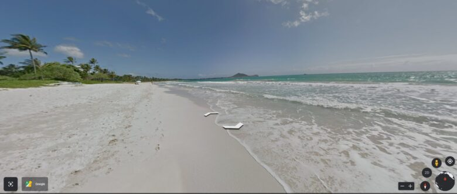

目次
大寒（だいかん）の到来：寒さの頂点を迎える時期
大寒は「だいかん」と読みます。日本の伝統的な二十四節気の一つで、一年で最も寒い期間を表します。この時期、自然は厳しい寒さに包まれ、生命は冬の深さに適応します。 2024年の大寒はの期間は、1月22日から2月3日までです。本記事では、大寒の由来とその文化的な意義に光を当て、冬のこの特別な時期をどのように過ごせばよいのか、 また、大寒にふさわしい食事や健康維持のコツについて考察します。寒さが最も厳しいこの時期に、どのようにして日々を暖かく、健康的に過ごすことができるのかを探ります。
①Google Earth（グーグルアース）
「Google Earth」は、好きな国の風景を鮮明に確認できるサイト。
「世界で一番詳しい地球儀」という名の通り、ボタン1つで世界の風景を確認することができます。
手軽に行くことができないハワイもGoogleEarthならボタン1つでOK。

ボタンを押せばハワイの海を歩くこともできる。
「将来行ってみたい国」、「日本の反対ブラジル」などなかなか行けない国を見ることで、新たな発見や驚きがあります。
チヤ
自身が住んでいる周辺をチェックするのもおすすめ